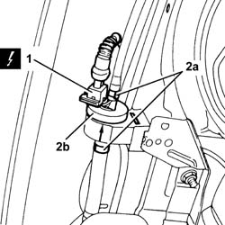
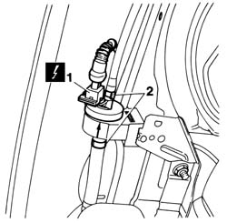
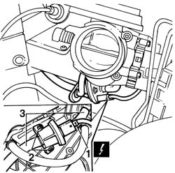

1080E24 fuel vapour by-pass valve/solenoid - r + r
- Path
- Procedures > 10 ENGINE > 1080 EXHAUST EMISSION CONTROL SYSTEM > 1080E evaporation control system > 1080E24 fuel vapour by-pass valve/solenoid - r + r
- Kind
- repair procedure (removal / refitting; the operation number is the code)
- Applies to
- engines: 1.6 TS , 1.8 TS, 2.5 V6, 3.2 V6; all production periods
- Interactive page
- https://sloeber94.github.io/elrnDB-a156/en/#/3237598
Applies to: engines: 2.5 V6, 3.2 V6; all production periods
 Removing
Removing
 Refitting
RefittingPosition the vehicle on the lift.
Disconnect the battery negative (-) terminal.
 | Name | Connector |
|---|---|---|
- | Battery |
4450B10 Front WHEEL (one) - R.R.
7055B64 Engine compartment DUST shield in front wheel arch (one), left or right - R.R.
1. Disconnect the electrical connection from the fuel vapour cut out valve.
| Name | Connector |
|---|---|---|
1 | Fuel vapour recovery solenoid |
2. Disconnect the fuel vapour inlet and outlet pipes (2a) and remove the fuel vapour cut out valve (2b) from its housing.

Applies to: engines: 2.5 V6, 3.2 V6; all production periods
Refitting
RemovingPlace the fuel vapour cut out valve back in its housing.
Connect the fuel vapour inlet and outlet pipes to the fuel vapour cut out valve.
Connect the electrical connection to the fuel vapour cut out valve.
7055B64 Engine compartment DUST shield in front wheel arch (one), left or right - R.R.
4450B10 Front WHEEL (one) - R.R.
Connect the negative (-) battery terminal.
Remove the vehicle from the ramp.
Applies to: engines: 1.6 TS ; all production periods
Removing
RefittingDisconnect the battery negative terminal.
| Name | Connector |
|---|---|---|
- | Battery |
4450B10 Front WHEEL (one) - R.R.
7055B42 Additional FRONT WHEEL ARCH (one), left or right - R.R.
1. Disconnect the electrical connection from the fuel vapour cut out valve.
| Name | Connector |
|---|---|---|
1 | Fuel vapour recovery solenoid |
2. Release the bands, disconnect the inlet/outlet pipes and remove the valve from its housing.

Applies to: engines: 1.6 TS ; all production periods
Refitting
RemovingFit the fuel vapour cut out valve in its housing.
Connect the inlet/outlet pipes tightening the bands.
Connect the electrical connection to the cut out valve.
7055B42 Additional FRONT WHEEL ARCH (one), left or right - R.R.
4450B10 Front WHEEL (one) - R.R.
Connect the battery negative terminal.
Applies to: engines: 1.6 TS ; all production periods
Removing
RefittingPlace the car on a lift.
1048A34 sleeve(s) from flow meter to air supply capacity case - r + r
1. Disconnect the electrical connection for the fuel vaopur cut out valve.
| Name | Connector |
|---|---|---|
1 | Fuel vapour recovery solenoid |
2. Undo the two fixing bolts on the chamber.
3. Release it from the flexible pipes and remove it from the engine compartment.

Applies to: engines: 1.6 TS ; all production periods
Refitting
RemovingReconnect the valve to the flexible pipes.
Tighten the two fixing bolts.
Reconnect the electrical connection.
1048A34 sleeve(s) from flow meter to air supply capacity case - r + r
Topics linked from this page (7)
- 1048A34 sleeve(s) from flow meter to air supply capacity case - r + r
- 4450B10 Front WHEEL (one) - R.R.
- 7055B42 Additional FRONT WHEEL ARCH (one), left or right - R.R.
- 7055B64 Engine compartment DUST shield in front wheel arch (one), left or right - R.R.
- A1 Battery
- A1B Battery ( BATTERY NEGATIVE )
- L10 Fuel vapour recovery solenoid